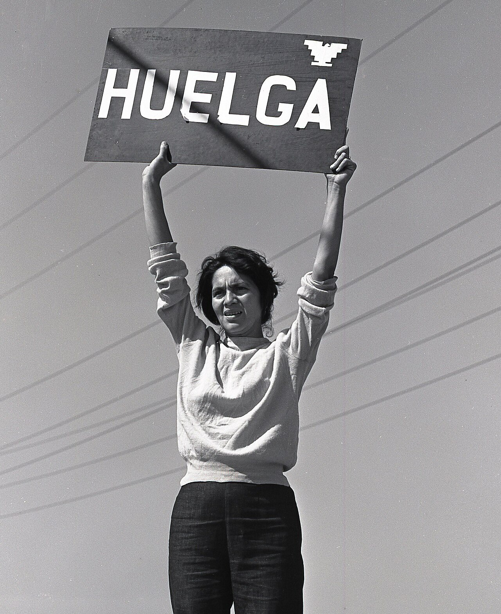
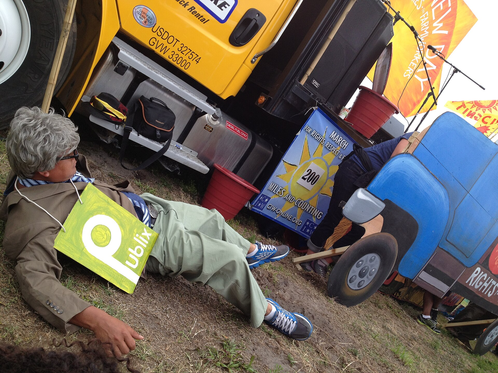

A movement with no money and no mass media won a national boycott, one kitchen table at a time.
Debate this · in your pods
"Knocking on one stranger's door is a waste of time when a single post reaches a million."
Goal of today
What you'll walk out with
Today we sit with three ideas that change how you build any campaign: relational organizing, the boycott as a relational medium, and the harder one, that you match the medium to the job instead of assuming reach always wins. We'll trace a movement that had no ads and no press and still won, then find where that model breaks. Thursday's module goes deeper on the same cases; today we dig in together.
Feel It
The last time you changed what you bought or ate, who actually moved you?
An ad? A post? An influencer you've never met? Or a specific person you know, who said "you have to try this," or "I stopped buying that, and here's why"? Be honest about which one actually did it.
Grape boycott pickets, United Farm Workers, 1960s (Wikimedia Commons, public domain).
Put yourself in it
You can't buy ads. The press ignores you. What is the one lever you DO have?
1965, Delano, California. Filipino and Mexican-American farmworkers walk off the grape fields. Dirt poor, most can't vote, no newspaper on their side.

Dolores Huerta with a Huelga (strike) sign, El Malcriado No. 21, September 1965 (Wikimedia Commons, public domain).
The organizer
If a shopper in New York will never meet that farmworker again, why would she change what she buys?
Dolores Huerta co-founded the union and ran the New York City grape boycott out of a cramped office with volunteers and no budget. Before we name how she did it, take a guess.
Here's the idea
Boycott
Enough ordinary people stop buying a product that the seller feels it where it counts: sales. Millions quietly skip the grapes.
Picket line
A visible, human presence outside the store. Not a poster. A real person you have to walk past and answer to.
House meeting
Persuasion in someone's kitchen, the oldest organizing tool there is. A few neighbors, one honest ask, then each hosts the next.
Secondary boycott
You don't skip the product only. You pressure the store that stocks it, so the pressure climbs the supply chain.
Huerta built it the way you build a boycott: house meeting by house meeting, and farmworkers themselves sent to the cities to stand on the sidewalk and ask shoppers, one at a time. Her line became the movement's heartbeat: Si se puede. Yes, it can be done.
The boycott as a medium
Watch how it actually spreads:farmworker → shopper (face to face at the store) → shopper → her neighbor → the neighbor's church → …
It moves the way trust moves: one person hands it to the next. A billboard buys eyeballs. A boycott borrows relationships. The moment a shopper agrees, she becomes the next messenger.
By 1970 the growers signed. Grapes rotted on the vine because millions of people no one had ever met were quietly not buying them.
Handle with honesty
You've heard one name your whole life: Cesar Chavez. So what does a flawed leader teach us about relational power?
He was central and genuinely gifted. Later in life he ran the union in an increasingly controlling, paranoid way, purged loyal staff, and imposed a cult-like group-confrontation ritual (borrowed from a group called Synanon) on members. Historians Miriam Pawel and Frank Bardacke document it. Same evidence-honest habit we used for the Robert Moses bridges in Week 2.
Here's the idea
The boycott worked because of thousands of trusted messengers, Huerta and every farmworker at every store, not one heroic man. Relational power is distributed by its nature. Concentrate it in one unaccountable person and the very same trust can be used to harm the people inside the movement. Admire the method. Don't sanctify the man.

Coalition of Immokalee Workers march, 2013 (Wikimedia Commons, CC BY-SA 3.0).
Not a 1960s story
They pressured Taco Bell, the buyer, not the farm. Why go after the brand you eat at instead of the grower?
Immokalee, Florida. In 2001 the Coalition of Immokalee Workers launched a national boycott of Taco Bell. Same playbook as the grapes: students organizing their own campuses, churches their own congregations, each person asked by someone they trust. Won in 2005: a penny-per-pound raise and enforceable protections in the fields.
The catch
Does a trusted person ALWAYS beat a broadcast? When would you actually be better off with the billboard?
Nobody in your county has ever heard your cause exists. You have $300 and two weeks. One person can't shake ten thousand hands. Push on it: name a job where reach genuinely wins.
Here's the idea
The lesson is not "relational always wins." A trusted person is strongest per contact and terrible at scale. Match the medium to the job. Broadcast is right for pure first contact, making the name exist for strangers who've never heard of you. Relational is right for turning a supporter into a person standing in the parking lot on Saturday. Most real campaigns run both: broadcast to be found, relational to be believed and acted on.
Workshop · in your pods
Diagnose the medium: broadcast, relational, or a mix?
Each pod takes two of these jobs. For each, decide the best fit, then name what it's trading. The "obvious" answer is sometimes wrong. Pick a spokesperson to report back.
30 people at Saturday's fundraiser, 200 past supporters on your listNobody in the county has heard of you, $300 and two weeksOne grocery buyer decides if the co-op stocks you, one meetingA false rumor is spreading in group chats you can't see
Best fit
Broadcast, relational, or mixed? Say which, and say it out loud to your pod before you defend it.
The trade
What does that choice gain, and what does it cost you? Every medium trades reach against depth somewhere.
The pressure point
Who actually has the power to give you what you want here, and who already has trust with them?
Where it breaks
Name the case where your instinct would fail. When would the "obvious" medium be the wrong call?
Your cause · Field Notebook
Open your Field Notebook. Who are your farmworkers at the store?
Your real cause, not a hypothetical. Work these three on your own, then we'll hear a few.
Name THREE trusted messengers: specific people or roles who ALREADY have trust with the people you need to move (a coach, a pastor, a barber, a group-chat admin, a co-op manager, a respected elder), and what each has standing to say.
What is the ONE action you actually need a person to take? Not "raise awareness." A behavior: show up, stop buying X, sign the paper petition, bring one friend to the meeting.
Right now, is your cause mostly BROADCASTING or building RELATIONSHIPS? Name the trade you're making by default, and the one you'd rather make.
Where we go from here
A boycott borrows relationships.
Thursday's module: read the grape-boycott archive and the Immokalee campaign, sort six real cases of broadcast vs. relational, and plant the seed of Project 3. Bring the notebook. We'll reconvene at the end to share.